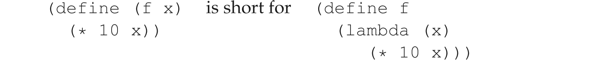
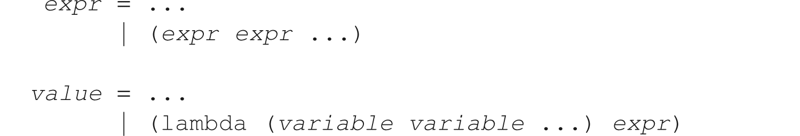
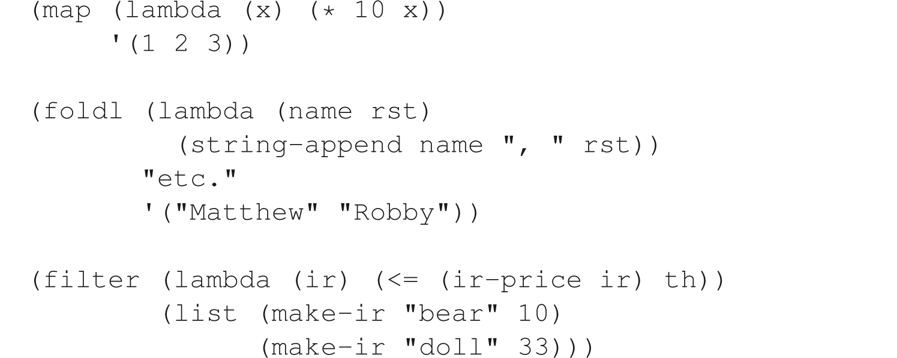

17.2 Computing with lambda
The insight that lambda abbreviates a certain kind of local also connects constant definitions and function definitions. Instead of viewing function definitions as given, we can take lambdas as another fundamental concept and say that a function definition abbreviates a plain constant definition with a lambda expression on the right-hand side.
It’s best to look at some concrete examples:

What this line says is that a function definition consists of two steps: the creation of the function and its naming. Here, the lambda on the right-hand side creates a function of one argument x that computes 10 · x; it is define that names the lambda expression f. We give names to functions for two distinct reasons. On the one hand, a function is often called more than once from other functions, and we wouldn’t want to spell out the function with a lambda each time it is called. On the other hand, functions are often recursive because they process recursive forms of data, and naming functions makes it easy to create recursive functions.
Exercise 282. Experiment with the above definitions in DrRacket.
Also add
; Number -> Boolean
(define (compare x)
(= (f-plain x) (f-lambda x)))
to the definitions area after renaming the left-hand f to f-plain and the right-hand one to f-lambda. Then run
(compare (random 100000))
a few times to make sure the two functions agree on all kinds of inputs. 
If function definitions are just abbreviations for constant definitions, we can replace the function name by its lambda expression:
(f (f 42))
==
((lambda (x) (* 10 x)) ((lambda (x) (* 10 x)) 42))
Strangely though, this substitution appears to create an expression that violates the grammar as we know it. To be precise, it generates an application expression whose function position is a lambda expression.
The point is that ISL+’s grammar differs from ISL’s in two aspects: it obviously comes with lambda expressions, but it also allows arbitrary expressions to show up in the function position of an application. This means that you may need to evaluate the function position before you can proceed with an application, but you know how to evaluate most expressions. Of course, the real difference is that the evaluation of an expression may yield a lambda expression. Functions really are values. The following grammar revises the one from intermezzo 1 to summarize these differences:

Alonzo Church, who invented lambda in the late 1920s, hoped to create a unifying theory of functions. He stated the beta axiom roughly like this.—From his work we know that from a theoretical perspective, a language does not need local once it has lambda. But the margin of this page is too small to explain this idea properly. If you are curious, read up on the Y combinator.
What you really need to know is how to evaluate the application of a lambda expression to arguments, and that is surprisingly straightforward:
((lambda (x-1 … x-n) f-body) v-1 … v-n) == f-body
; with all occurrences of x-1 … x-n
; replaced with v-1 … v-n, respectively [beta-v]
That is, the application of a lambda expression proceeds just like that of an ordinary function. We replace the parameters of the function with the actual argument values and compute the value of the function body.
Here is how to use this law on the first example in this chapter:
((lambda (x) (* 10 x)) 2)
==
(* 10 2)
==
20
The second one proceeds in an analogous manner:
((lambda (name rst) (string-append name ", " rst))
"Robby" "etc.")
==
(string-append "Robby" ", " "etc.")
==
"Robby, etc."
Stop! Use your intuition to calculate the third example:
((lambda (ir) (<= (ir-price ir) th))
(make-ir "bear" 10))
Assume th is larger than or equal to 10.
Exercise 283. Confirm that DrRacket’s stepper can deal with lambda. Use it to step through the third example and also to determine how DrRacket evaluates the following expressions:

Exercise 284. Step through the evaluation of this expression:
((lambda (x) x) (lambda (x) x))
Now step through this one:
((lambda (x) (x x)) (lambda (x) x))
Stop! What do you think we should try next?
Yes, try to evaluate
((lambda (x) (x x)) (lambda (x) (x x)))
Be ready to hit STOP.